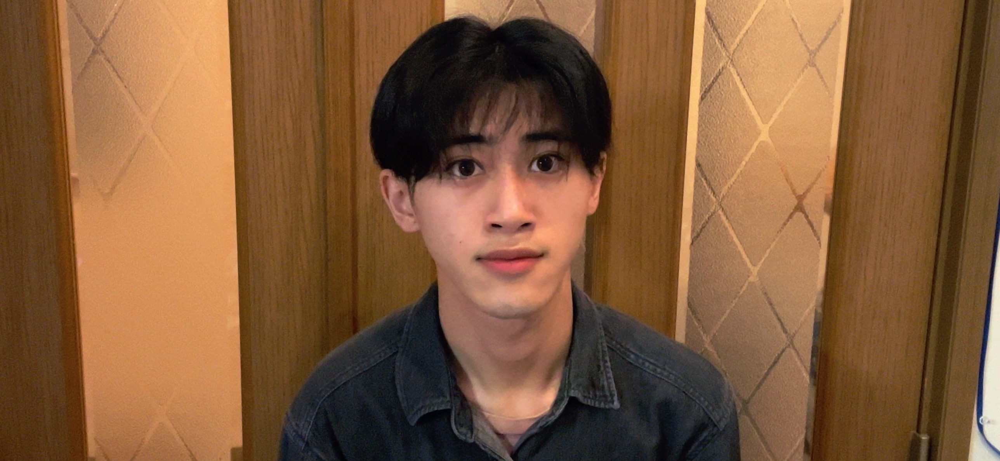

01 / SOUND
MUSIC
Music
作詞・作曲・ビートメイク。ジャンルに縛られず、感情やその時々の感覚を音にしています。
ひとつの肩書きに収まらず、興味のあることを自分なりの表現に。
音楽も、言葉も、考えることも。ここは RYK!LE の活動をまとめた場所です。

A LITTLE ABOUT MERYK!LE（リキル）。音楽制作を軸に、言語や文化、デザイン、日々の考えごとなど、幅広いテーマに関心を持って活動しています。
違いを面白がり、自分の視点で考え、表現すること。完成したものだけでなく、試行錯誤や学んでいる過程も大切にしています。
作詞・作曲・ビートメイク。ジャンルに縛られず、感情やその時々の感覚を音にしています。
日本語を軸に、英語・韓国語・スペイン語・ドイツ語・タガログ語などを学び、言葉と文化の違いを探っています。
日常で感じたことや自分の考えを、文章・ビジュアル・発信を通して表現しています。
Web制作やデジタルツールなど、新しいアイデアを試しながら、自分にできる表現の幅を広げています。
人それぞれの視点や背景を知ろうとすること。すぐに決めつけず、理解しようとすること。
自分の考えを持ちながら、違う意見にも向き合う。そんな日々の思考や気づきを、ひとつずつ言葉にしています。